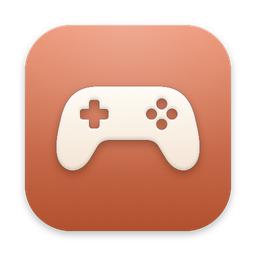
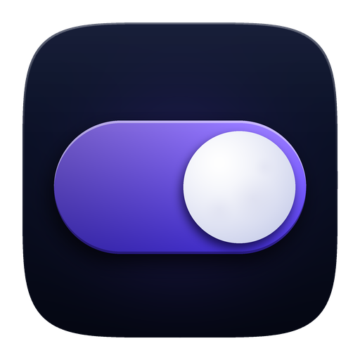
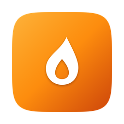

Four little apps for your Mac.
Free, quiet and made to stay out of your way. Pick one to see what it does and download it.

Ludus
43 little games for little breaks, right from your menu bar. Works offline. Mac and Windows. Version 1.12.39.
Memo
Everything you copy, one shortcut away. Search it and paste it back. Mac and Windows. Version 1.1.1.

Nox
One switch for light and dark, on a schedule if you like. Mac and Windows. Version 1.4.1.

Awayke
Keep your MacBook awake with the lid closed. Mac. Version 1.7.0.
All downloads (last published builds)
Unsigned app: how to open it
This app is not signed yet (Apple's developer account is paid, and one is not set up yet), so your computer warns you the first time. Mac: right-click the app, choose Open, then Open again (or System Settings > Privacy & Security > Open Anyway). Windows: in SmartScreen click More info, then Run anyway. You can check your download against the SHA-256 fingerprints listed in the project's CHECKSUMS.md on GitHub.